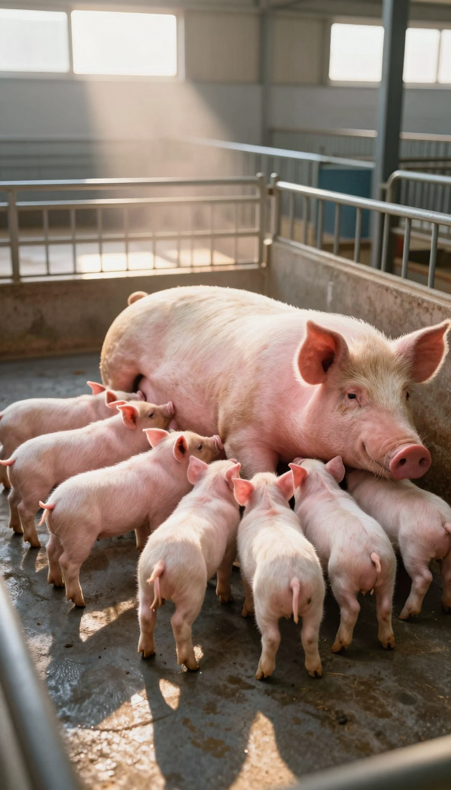
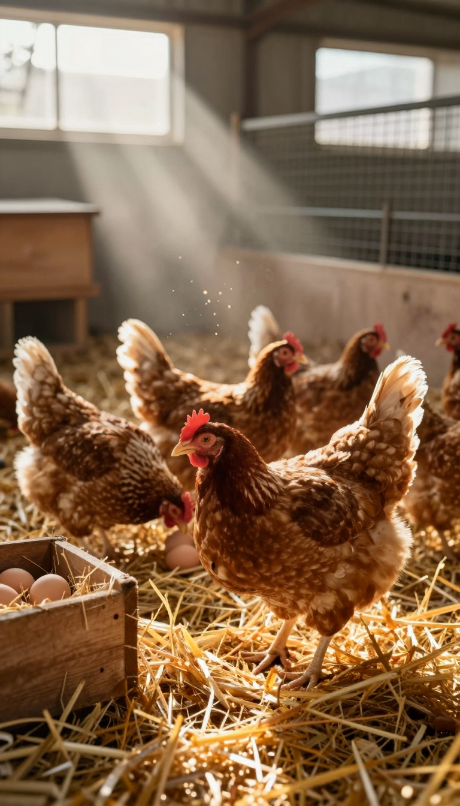
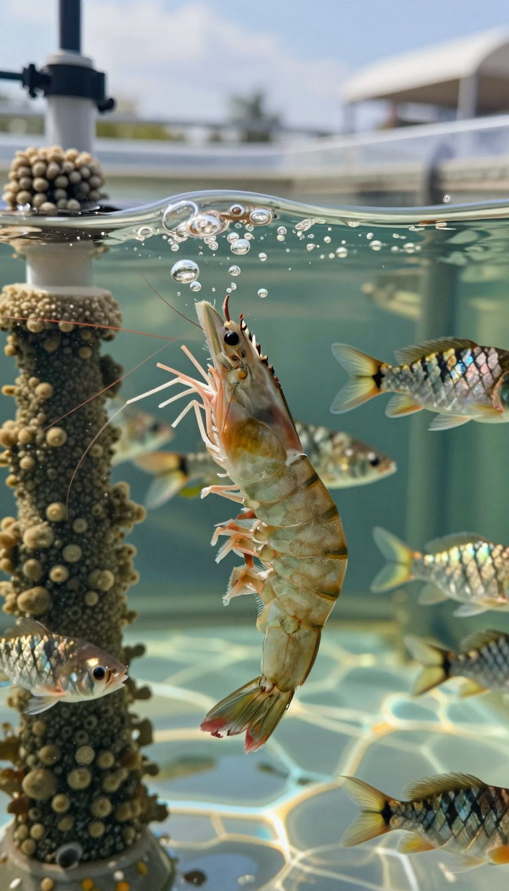
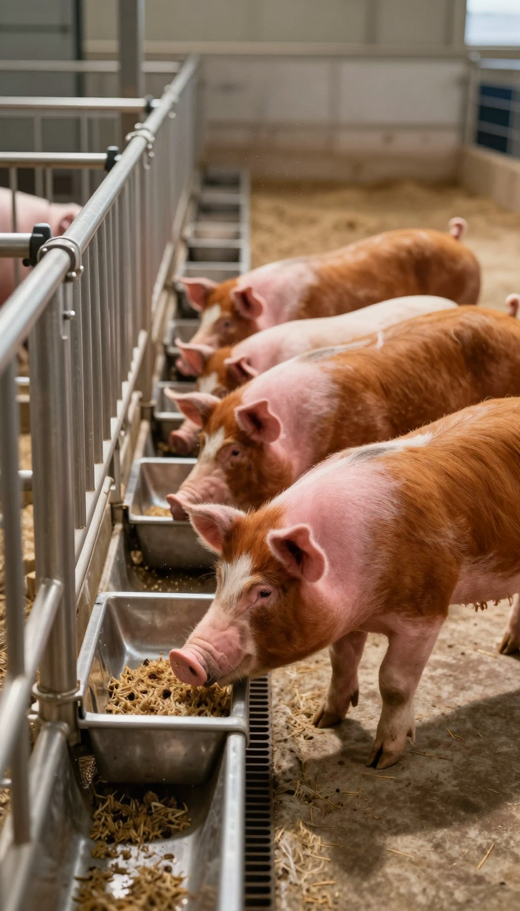
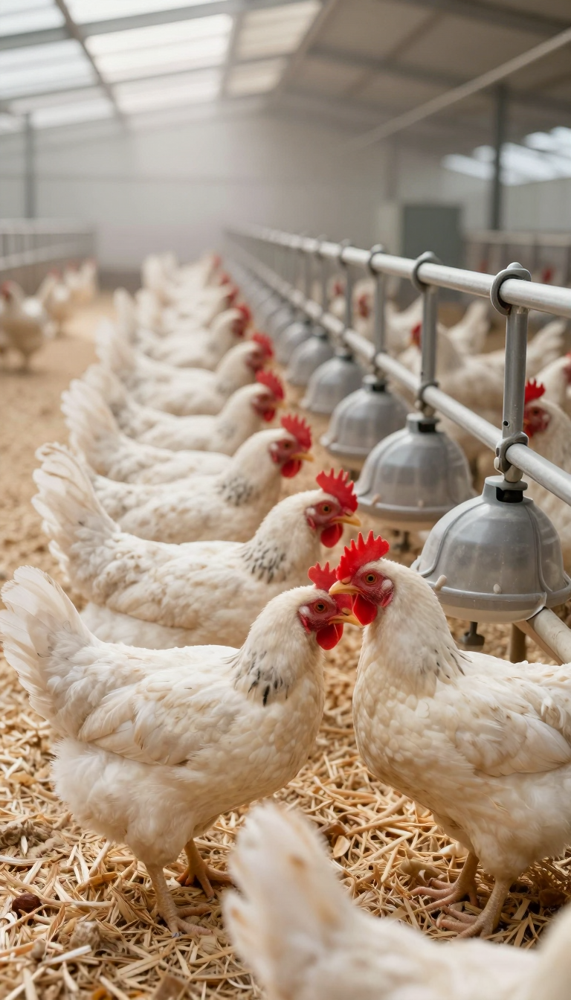
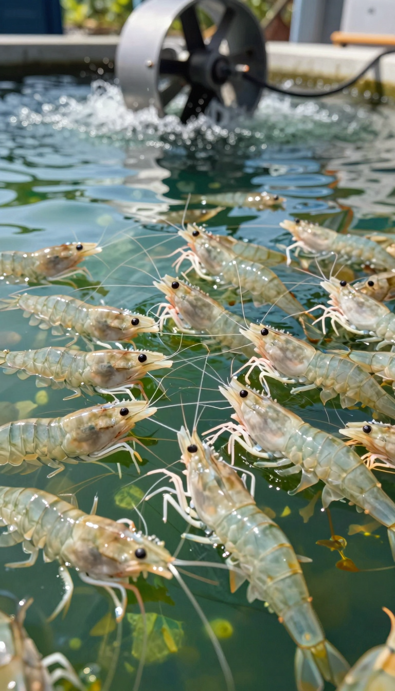

繁殖線以植物甾醇為核心，生長線以蛋白酶為核心。數據來自台灣實證場。

植物甾醇調節母豬生殖激素平衡，優化子宮內營養分配，提升胎兒均勻度與初生活力；搭配蛋白酶強化乳汁蛋白合成，仔豬離乳整齊。
Enhances protein digestion for milk production; optimizes fat metabolism to preserve body condition; supports gut microbiome balance via milk quality. ① Milk Protein Enhancement Subtilisin breaks down feed proteins, providing amino acids directly into milk. Higher milk protein = better piglet growth and survival. → Same feed, richer milk. Grade A weaner rate rises 5-8%. ② Body Condition Preservation Optimizes fat metabolism, reducing body reserves mobilization. Sow maintains BCS 2.5-3.5, supporting next litter conception. → Less body loss = faster return to estrus. Annual litter rate stays above 2.2. ③ Piglet Gut Development Improved sow nutrition transfers to milk IgG and growth factors. Better passive immunity + villi development = lifetime FCR advantage. → Invest in the sow, benefit all three outcomes. Does It Work for Your Breed? Yorkshire × Landrace National mainstream. Lactation intake 5-7kg/day. Weaning uniformity ↑, Grade A piglet rate +5-8% PIC composite Corporate farms. Intake 6-8kg/day. Significant improvement, Grade A rate improved Landrace GD/SC/FJ. Intake 5-7kg/day. Uniformity improved, Grade A + Shennong composite South China large farms. Intake 5-7kg/day. Significant improvement, Grade A + ※ Average PSY ~23 in mainland China. 活力旺®'s core value: ① Increase Grade A piglet rate ② Reduce weak piglet losses ③ Maintain sow body condition for next litter. Small Trial, Large Profit 1 Phase 1: Effect Verification Scale : 20-50 sows (same breed, same parity). 4-6 weeks
values. Actual returns depend on management. Ready to maximize your boar's value? Contact a Vitality® distributor for a tailored plan. Contact Distributor ※ Data from Vitality® field trials and published literature. Actual results vary with management, breed, season. ※ Use breed‑matched control groups for verification. ※ ROI figures are references, not investment advice. Fig: Boar sperm morphology improvement over time | Day 0→7→14→21, abnormal rate 45%→5% 活力旺® VitalBoost Plus PRECISION ANIMAL NUTRITION Boar Pregnant Sow Lactating Sow Nursery Finisher Layer Hen Broiler Breeder Shrimp Tilapia Livestock Home © 2026 活力旺® Distributor · VitalBoost® Subtilisin · Professional Animal Nutrition ↑ values. Actual returns depend on management. Return ratio approx. 1:4～1:6 Ready to improve your sow reproductive performance? Contact VitalBoost® Distributor Contact Distributor ※ Data from VitalBoost® field trials and published literature. Results vary by breed, parity, and management. ※ Recommend same-farm control group. ※ ROI is reference value only, not investment advice. 活力旺® VitalBoost Plus PRECISION ANIMAL NUTRITION Boar Pregnant Sow Lactating Sow Nursery Finisher Layer Hen Broiler Breeder Shrimp Tilapia Livestock Home © 2026 活力旺® Distributor · VitalBoost® Subtilisin · Professional Animal Nutrition ↑ values. Based on A/B grade piglet standard calculation. Ready to maximize your lactating sow performance? Contact 活力旺® Distributor 📞 Technical Consultation 📋 Request Trial Protocol ※ Data based on same-farm same-breed control trials. Results vary by breed, housing, management, and season. ※ Recommend on-farm control group verification. ROI ratios are reference values only. 活力旺® VitalBoost Plus PRECISION ANIMAL NUTRITION Boar Pregnant Sow Lactating Sow Nursery Finisher Layer Hen Broiler Breeder Shrimp Tilapia Livestock Home © 2026 活力旺® Distributor · VitalBoost® Subtilisin · Professional Animal Nutrition id="backToTop"> ↑ values. Actual returns depend on management. Nursery stag

植物甾醇調節鈣磷代謝與蛋殼腺功能，強化蛋殼超微結構，延緩產蛋後期蛋殼品質衰退，提升種蛋孵化性能。
s — dual optimization for roosters and hens ① Nutrient Absorption & Gut Health VitalBoost® Protease improves protein digestibility by 18-22%, enhances gut villi structure, reduces gut inflammation, ensuring key nutrients reach the reproductive system. → Same feed, more key amino acids absorbed. Better sperm development, more nourished follicles. ② Antioxidant & Cell Protection VitalBoost® Protease activates Nrf2/ARE pathway, protects oocyte/sperm cell membrane integrity, reduces embryonic oxidative stress, significantly lowers early embryo mortality (PMC 2017/2024). → Sperm protected from oxidative damage. Intact oocyte membranes. Higher embryo survival after fertilization = more healthy chicks. ③ Reproductive Endocrine Regulation VitalBoost® Protease activates mTOR pathway, stabilizes FSH/LH/estrogen secretion, improves ovarian mitochondrial function, elevates progesterone (P4), extends peak laying by 4 weeks (ResearchGate 2017). → Stable hormones = sustained laying peak. 4 extra weeks of high production = thousands more qualified eggs. ④ Rooster Testicular Function VitalBoost® Protease improves Leydig cell function, boosts testosterone synthesis, delays age-related semen quality decline. Sperm motility improves from 25% to 85%+. → Older roosters don't decline as fast. Same rooster ratio, higher and more consistent fertility. Replace roosters less often. Does It Work for Your Breed? Breed Type Main Provinces Fertility Improvement Hatchability Healthy Chick Rate VitalBoost® A
) 1:5 Conservative ROI Ratio Field Trial Reference 1:9 Top Farms ※ Reference value. Excludes hatchery premium. Actual results vary by management. Ready to enter a new era of high-hatchability breeding? Contact VitalBoost® distributor for your custom breeder program Contact VitalBoost® Distributor ※ Hatchability/fertility/healthy chick data from VitalBoost® breeder field control trials; P4/embryo quality from PMC 2017/2024; reproductive axis regulation from ResearchGate 2017. ※ Results vary by breed, age, and management conditions. Recommend same-farm control group. ROI is reference only, not investment advice. 活力旺® VitalBoost Plus PRECISION ANIMAL NUTRITION Boar Pregnant Sow Lactating Sow Nursery Finisher Layer Hen Broiler Breeder Shrimp Tilapia Livestock Home © 2026 活力旺® Distributor · VitalBoost® Subtilisin · Professional Animal Nutrition ↑ 1:6 Top Farm 活力旺® layer solution addition cost approx. ¥20/ton feed , within standard additive cost acceptance for mainland farms. ※ Field trial reference values. Actual returns vary by management conditions. Based on 10,000 hens, 72-week lay period, market egg price, 115g daily feed intake per hen. Ready to Boost Your Layer Farm Performance? Contact your 活力旺® distributor today 📞 Technical Consultation 📋 Request Trial Protocol ※ 活力旺® distributors provide complete trial record forms including laying rate logs, FCR calculation sheets, spot egg detection cards, and yolk color comparison cards. ※ Data sourced from 活力旺® field trials and published literature (ResearchGate 2017/MDPI 2021/PMC 2018/CASS 2023). ※ Actual results vary by breed, stocking density, feed formulation and season. Recommend on-farm control group verification. ※ ROI ratios are reference values and do not constitute investment advice. 活力旺® VitalBoost Plus PRECISION ANIMAL NUTRITION Boar Pregnant Sow Lactating Sow Nursery F

植物甾醇促進親本性腺發育與卵黃生成，優化卵質與精子活力，提升受精率及苗種整齊度。
植物甾醇促進親本性腺發育與卵黃生成，優化卵質與精子活力，提升受精率及苗種整齊度。

複合蛋白酶提升蛋白消化率與胺基酸利用率，優化腸道菌群平衡，降低糞氮排放；肉牛/羊搭配植物甾醇提升瘤胃發酵效率。
Why Bacillus subtilis Protease Improves FCR Subtilisin (EC 3.4.21.62), a serine endoprotease derived from Bacillus subtilis , maintains enzymatic activity across pH 6.5–8.0 in the swine digestive tract. It efficiently hydrolyzes the anti-nutritional factors present in soybean meal — primarily glycinin and β-conglycinin — into 2–6 amino acid oligopeptides, significantly enhancing brush-border peptidase efficiency in the jejunum (PMC 2018). Apparent ileal digestibility of lysine improves by approximately 3–5 percentage points, equivalent to reducing soybean meal inclusion by 8–12 kg/tonne while maintaining equivalent digestible amino acid supply. ① Precise Protein Hydrolysis Degrades trypsin inhibitors, lectins, and intact storage proteins in soybean meal, releasing free amino acids and di/tripeptides for direct absorption. → 3–5% improvement in ileal AA digestibility translates directly to FCR reduction without formula redesign. ② Hindgut Microenvironment Reduces undigested protein substrate entering the large intestine, decreasing putrefactive fermentation and biogenic amine production that damages intestinal villi. → Villus height/crypt depth ratio maintained throughout finishing phase; feed efficiency does not decline with age. ③ AGP Reduction · Immunity · Stress Tolerance Bacillus subtilis colonization competitively excludes C. perfringens , upregulates secretory IgA, and strengthens innate mucosal immunity. Lipopeptide metabolites (iturin, surfactin) provide broad-spectr
by Scale Farm Scale (head/batch) Feed Saved (tonnes) Revenue Gain / Batch Annual Gain (3 batches) 1,000 head 79.4 t $30K $90K 5,000 head 397 t $150K $450K 10,000 head 794 t $300K $900K ※ Calculated at (2.75−2.06)×115kg×scale×feed price. Enhancer cost not deducted. Actual ROI varies by management. ※ Field data from Taiwan trials with control group design (n≥200/group). Baseline FCR per NY/T 2894-2016 and MARA 2023. Actual results vary by farm management, genetics, season. Formulator verification recommended prior to full adoption. ProGrow® Finisher Enhancer PRECISION ANIMAL NUTRITION · ANTIBIOTIC-FREE Layer Hen Broiler Breeder Shrimp Cattle Home © 2026 ProGrow® · Subtilisin Protease Enhancer · Precision Animal Nutrition ↑ values. Actual returns depend on management. ※ Data from published literature (Sentonpharm field trial, PMC 2012, Selko 2024, PMC11394282). ADG/FCR/milk improvements are literature-reported means. Actual results vary by farm management, breed, feed formula, and environment. Bacillus subtilis listed in MARA Feed Additive Catalogue for cattle and sheep use. ProGrow® Ruminant Enhancer PRECISION ANIMAL NUTRITION · ANTIBIOTIC-FREE Finisher Pig Broiler Layer Hen Shrimp Home © 2026 ProGrow® · Bacillus subtilis Enhancer · Precision Animal Nutrition ↑

蛋白酶促進腸絨毛發育與隱窩深度比優化，提升飼料養分吸收表面積，搭配植物萃取物緩解熱緊迫。可作為抗生素生長促進劑替代方案。
蛋白酶促進腸絨毛發育與隱窩深度比優化，提升飼料養分吸收表面積，搭配植物萃取物緩解熱緊迫。可作為抗生素生長促進劑替代方案。
values only, not investment advice. Ready to maximize your broiler's commercial value? Contact VitalBoost® Distributor 📞 Technical Consultation 📋 Request Trial Protocol Native Chicken Farming Challenges? ⏱ Long grow-out (16-22 weeks). High FCR (3.3-3.5). Feed costs never come down. 🪶 Dull feathers, uneven body size. Poor appearance at live bird market. Only ordinary prices. 📉 Survival rate varies 92-95%. Losses eat profits. Intense rural competition. Real Results with VitalBoost® +5-8% Weight Gain 16wk 2.45kg→2.60-2.65kg -3-5% FCR 3.45:1→3.30-3.35:1 +2-3% Survival Rate 95%→97-98% +15% Carcass Score Feather quality significantly improved 📌 VitalBoost® pre-mixed product, 20kg/bag. Add 20kg per 1 metric ton of complete feed. Ready to use. Why VitalBoost® Works for Native Chickens Too? ① Precision Enzyme Complex : Improves protein and amino acid absorption, reduces anti-nutritional factors → Same coarse feed, more absorbed. FCR drops 3-5% directly. ② Immune Modulation Peptide : Activates N

蛋白酶增強蛋白同化效率與能量分配，減輕肝胰臟代謝負擔；搭配免疫調節因子提升腸黏膜屏障功能，降低弧菌感染風險。
蛋白酶增強蛋白同化效率與能量分配，減輕肝胰臟代謝負擔；搭配免疫調節因子提升腸黏膜屏障功能，降低弧菌感染風險。
values. Actual returns depend on farm management. Return ratio ~1:8 to 1:12 ※ Data from published literature (PMID:38481478; APJMBB 2024 doi:10.35118/apjmbb.2024.032.3.10; ResearchGate 2026; FSI 2025; MDPI 2023) and field trial reference values. Survival/FCR improvements are literature-reported means and vary by culture system, water quality, density, and management. Establish same-farm control groups to validate. Bacillus subtilis listed in MARA Feed Additive Catalogue for aquatic feed use. ProGrow® Shrimp Enhancer PRECISION AQUACULTURE NUTRITION · ANTIBIOTIC-FREE Finisher Pig Broiler Cattle & Sheep Layer Hen Home © 2026 ProGrow® · Bacillus subtilis Enhancer · Precision Aquaculture Nutrition ↑
經台灣150萬頭次養殖實證，數據由獨立第三方收集。
精準營養調控替代傳統抗生素使用路徑，降低養殖風險。
每支產品依照混合型飼料添加劑註冊品種目錄標定劑量。